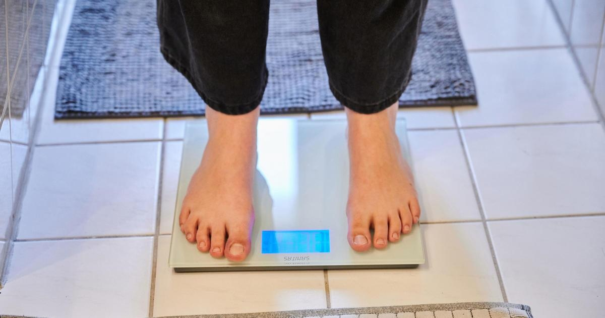

Weight loss pill with active ingredient in Ozempic and Wegovy shows promise, study saysBOSTON - A new experimental drug is showing promise in helping people lose weight. The popular weight loss drugs, Ozempic and Wegovy, are given as a weekly injection but recent data found their active ingredient may also be effective when taken in pill form. Now a new study in the New England Journal of Medicine (NEJM) has found that an experimental daily oral medication from the drug maker Eli Lilly, can also induce significant weight loss. Researchers tested the drug orforglipron on 272 people with an average weight of 240 pounds and found that within 36 weeks, participants had lost up to 15-percent of their body weight. They also noticed improvements in triglycerides, cholesterol, and systolic blood pressure. Most side effects were mild to moderate and included nausea, vomiting, constipation, and diarrhea causing 10-to-17 percent of the participants to stop taking the drug. Longer studies are underway so it will be some time before this new drug would come to market. for more features. |
 |